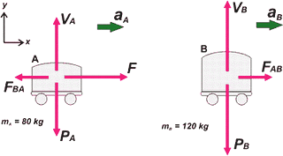

NO ME SALEN
PROBLEMAS RESUELTOS DE FÍSICA DEL CBC
(Leyes de Newton)
|
|

|
| |
 |
FIS d11 - Dos carretones, A y B, cuyas masas son
mA y mB , se encuentran uno junto
al otro, como muestra la figura, apoyados sobre
un piso horizontal que presenta rozamiento
despreciable. |
 |
Sobre el carretón A se aplica una
fuerza horizontal demódulo F. ¿Cuáles de las
siguientes afirmaciones son ciertas?
a) Si la masa de B es cero, el módulo de la fuerza
de contacto entre los carritos es igual a F.
b) Si las masas son iguales, la fuerza de contacto,
en módulo, es igual a la mitad de F.
c) Si la masa de A es cero, el módulo de la fuerza
de contacto entre los carritos es igual a F.
d) El módulo de la fuerza de contacto entre
carritos puede superar el valor de F.
e) Si ahoraF se aplica sobre el carretón B, el
módulo de la fuerza de contacto no cambia.
f) Si se suprime F la fuerza de contacto entre
los carritos es nula. |
|
| |
| Mirá este ejercicio viene con un bonus track. Primero respondemos todas las preguntas y después te lo resuelvo haciendo que F = 30 kgf, mA = 80 kg, mB = 120 kg. Pero no es recomendable hacer nada de nada sin antes presentar el DCL. Como tenemos dos cuerpos, haremos dos DCLs. |
|
|
|  |
|
|
a) Si la masa de B es cero, el módulo de la fuerza
de contacto entre los carritos es igual a F. Es falso. Si la masa del carrito fuese nula, la fuerza de contacto también sería nula. Y el carrito B se aceleraría delante del A sin necesidad de fuerza que lo empuje.
b) Si las masas son iguales, la fuerza de contacto,
en módulo, es igual a la mitad de F. Es cierto. La aceleracion de los dos carritos es la misma, de modo que hace falta una fuerza doble, F, para acelerar de la misma manerq la mitad de la masa, mB.
c) Si la masa de A es cero, el módulo de la fuerza
de contacto entre los carritos es igual a F. Es cierto, no te olvides que la fuerza que empuja a B no es F sino la fuerza de contacto.
d) El módulo de la fuerza de contacto entre
carritos puede superar el valor de F. Nopo, si parten del reposo (ahora que si ese fuese el instante de un choque...).
e) Si ahora F se aplica sobre el carretón B, el
módulo de la fuerza de contacto no cambia. Tampoco. La fuerza de contacto depende de las masas. No el lo mismo empujar un auto que empuja una pelotita de ping-pong, que empujar una pelotita de ping-pong que empuja un auto.
f) Si se suprime F la fuerza de contacto entre
los carritos es nula. Verdadero.
|
|
No dejes de leer esta ADVRTENCIA de
No me salen |
|
Bueno, volvé a mirar bien el DCL. Fijate bien cómo los hice. Mirá estos detalles, son importantes: como hay dos cuerpos, los pesos llevan subíndice, lo contrario significaría que son iguales y eso no es cierto. La fuerza que las vías hacen sobre cada carro la llamé V (por vía) cada una con su subíndice. Vos la hubieras llamado N (por normal), francamente no entiendo esa tozudez tuya. Las fuerzas de contacto, las llamé FAB y FBA respectivamente. |
|
|
|
Fijate que hasta el mismo nombre que le pongo denuncia que son pares de interacción. La fuerza externa que viene con el enunciado actuando sobre el carrito A, la dibujé correctamente, con el origen dentro del carrito A. Cualquier otra cosa que le quieras agregar a un DCL y que no sea una fuerza (velocidad, aceleración, informaciones, lo que quieras) dibujalo afuera del cuerpo. Adentro sólo los orígenes de los vectores fuerza que actúan sobre el cuerpo en cuestión.
OK, despues de cada DCL vienen las ecuaciones de Newton (en este caso las, porque las fuerzas que actúan no son codireccionales, necesitamos dos ejes... que ya los dibujé). Fijate que aA = aB = a, en este caso se sobreentiende.
Carro A (eje x) → ΣFx = m ax → F — FBA = mA . a
Carro B (eje x) → ΣFx = m ax → FAB = mB . a
Carro A (eje y) → ΣFy = m ay → VA — PA = 0
Carro B (eje y) → ΣFy = m ay → VB — PB= 0
Las ecuaciones en y, en este caso no aportan gran cosa. Sabemos que la aceleración vertical de los carritos es 0 porque ninguno de los dos levanta vuelo ni se hunde en la Tierra, por lo tanto la fuerza con que los sostiene la vía es igual a su respectivo peso.
Las ecuaciones de x, en cambio resultan interesantes. Si las mirás con cariño, juntas forman un sistema de dos ecuaciones con dos incógnitas, una de ellas, la que figura en pregunta del enunciado: la fuerza de contacto. OK, dejemos la física por un rato y dediquémosnos al álgebra.
Sumemos miembro a miembro esas dos ecuaciones:
F — FBA + FAB = mA . a + mB . a
Como los pares de interacción valen lo mismo y está uno sumando y el otro restando, se cancelan mutuamente. En el segundo miembro saco factor común a.
F = a (mA + mB)
a = F / (mA + mB)
a = 300 N / 200 kg
a = 1,5 m/s²
Con este valor voy a cualquiera de las dos ecuaciones (mejor a las dos) y averiguo el valor de la fuerza de contacto. |
|
|
|
|
|
| Volvamos a la física. |
|
|
DISCUSION: Este otro camino algebraico es más inusual, pero nos hace pasar por un lugar interesante, fijate. En lugar de sumar miembro a miembro voy a restar
F — FBA — FAB = mA . a — mB . a
F — 2 FAB = a (mA — mB)
2 FAB = F — a (mA — mB)
|
|
 |
| |
FAB = [ F — a (mA — mB) ] / 2 |
|
|
|
| ¿Lo pudiste seguir? Bueno, esta expresión describe perfectamente el valor de la fuerza de contacto. Por ejemplo, ¿cuánto vale si las masas son iguales?, ¿cuánto vale si la masa A o la B fuera cero?, ¿cuánto vale si la masa A es más grande que la B?, ¿puede la fuerza de contacto valer 0... cuándo? ¿puede ser mayor que F? Fijate cuántas cosas nos puede confirmar esa expresión, que nuestra intuición puede también resolver perfectamente. |
|
| DESAFIO: ¿Pueden los carritos, tal como los dibujé en sus DCLs, estar moviéndose hacia la izquierda? ¿En ese caso... qué cambiaría? |
|
| Algunos derechos reservados.
Se permite su reproducción bajo la solemne promesa de citar la fuente con mucho amor y cariño. Última actualización set-06. Buenos Aires, Argentina. |
|
|
|